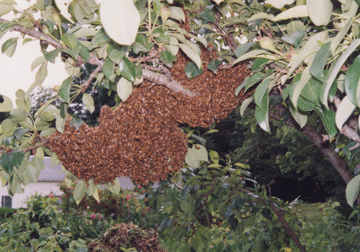
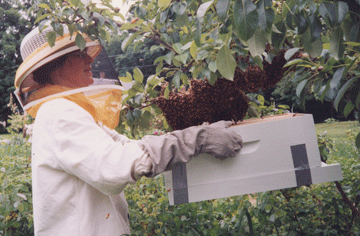
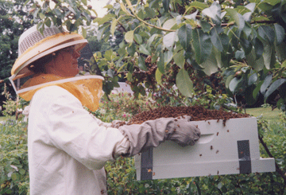
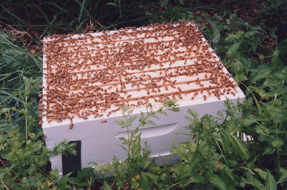
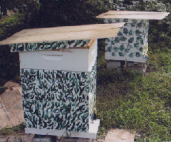

|  | Sweet Flying Friends I never thought hanging out with a bunch of insects would be enjoyable, especially bees! My view on bees changed when I attended a beekeeping open house at a local apiary. Seeing a frame of bees with a queen in a glass demonstration hive and learning about their behavior was interesting. What was most incredible, at the end of the program the beekeeper asked if I would help him put the frame of bees in the demonstration hive back in its original hive. We went into his bee yard, buzzing with bees, and stood in back of the hive. We were not wearing any protective gear. He gently took off the outer cover of the hive, and made room among the frames of bees for the tenth frame. He opened the demo box and slowly took out the frame, checking it to see that the queen was on the frame. Slowly he put the frame in the hive. When he had checked that the bees were OK, he put the outer cover back on top. The bees flying into the hive front door were busy doing their job gathering nectar, so they did not bother us. It was a powerful lesson about how our actions and attitudes affect what we do. The beekeepers’ slow movements, light-colored clothing, and his understanding of bee behavior, bees guard the front door not the back, made it easy to work with the bees. As I learned later in his bee class, its not a good idea to go into the hive during a time of nectar dearth, usually around July and August. Bees are crabby and aggressive when they are hungry. In summer, standing down wind from beehives, when the bees are fanning their nectar to make it thicker, one is surrounded by the most delightful sweet aroma of all the flowers the bees visited that day. Catching a swarm Swarming bees are gentle as they have eaten a lot of honey for their adventure of starting an new colony. The queen is in the middle of the swarm. 1. Swarm on a branch. 2. Holding a bee hive body under the swarm. 3. A friend vigorously shakes the branch. The bees and queen all drop onto the box. The hive box on the ground waiting for all the bees to go inside. Bees on the outer edge signal that the queen is inside. If the queen is in the box the bees are calm and all the bees go inside their new home. |
||||||
|  | |||||||
|  | |||||||
|  | |||||||
|  | |||||||
| Older bee hives with two hive brood boxes. Front hive has a honey super on top. | |||||||